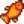
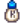
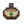
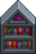
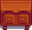

Gezgin Araba
| Gezgin Araba | |
 | |
 | |
| Açık Saatler: | Cuma ve pazarları 06.00 - 20.00 Akşam Pazarı'nda 17.00 - 02.00 Çöl Şöleni'nde 12.00 - 02.00 |
| Kapalı Günler: | Pazartesi ve perşembe arası ve cumartesi |
| Adres: | Kömürözü Ormanı |
| Oturanlar: | |
Gezgin Araba, cuma ve pazar günleri çiftliğin güneyindeki Kömürözü Ormanı'nda beliren ve 20.00'de kapanan bir dükkândır. Ayrıca Akşam Pazarı'nın (Kış 15-17) ve Çöl Şöleni'nin her gününde (Bahar 15-17) belirir. Gezgin Tüccarın belirdiği her gün stoğu farklı olur. Standart stok olarak 10 adet rastgele seçilmiş ögeden 1 veya 5 adet gibi kısıtlı miktarda ve 1 adet rastgele seçilmiş bir mobilya satar. Ekstra olarak bir özel stoğu da olabilir.
Gezgin Araba fiyatları sürekli değişir. Genelde normalden biraz daha pahalı olur ancak sürekli bir ögenin normal fiyatından daha azına satıldığı olur. Ayrıca mevsiminin dışında ögeler de satarak yığınlar konusunda yardımcı olur.
Arabayı ise bir fes ve güneş gözlüğü takan bir domuz çeker. Domuz ile etkileşime geçilirse domuz homurdar. Sağ tık sürekli üstünde tutunursa homurdanıp durur. Akşam Pazarı'nda da domuz bir can simidi içinde yüzerken görülebilir.
Özel Stok
Not: Kahve Çekirdeği ve Ender Tohum, herhangi bir mevsimde standart stok olarak da satılabilir.
| Öge | Adet Başı Fiyat | Mevsim | Notlar | |
|---|---|---|---|---|
| Ender Tohum | 100% ihtimalle çıkar. %10 ihtimalle beşerli çıkar, %90 ihtimalle bir tane çıkar. | |||
| Nadir Korkuluk #4 | %40 ihtimalle çıkar. | |||
| Kahve Çekirdeği | %25 ihtimalle çıkar. | |||
| Kırmızı Fes | %10 ihtimalle çıkar. | |||
| Joja Mobilya Kataloğu | Halkevi yığınları tamamlanmışsa %10 ihtimalle çıkar. | |||
| Junimo Kataloğu | Halkevi yığınları veya Joja Toplumsal Gelişim Proje Formu tamamlanmışsa %10 ihtimalle çıkar. | |||
| Retro Kataloğg | %10 ihtimalle çıkar. | |||
| Çay Takımı | 25. yıldan itibaren %5 ihtimalle çıkar.[1] | |||
| Yıldızçiyi Vadisi Yıllığı | Beş yetenek kitabından biri, %5 ihtimalle çıkabilir. | |||
| Yem ve Mantar | ||||
| Oduncunun Haftalığı | ||||
| Madencilik Aylığı | ||||
| Savaşçının Dört Aylığı | ||||
| Düğün Yüzüğü (Tarif) | Yalnızca çok oyunculu oyunlarda: %100 ihtimalle çıkar (satın alındıktan sonra çıkmaz). Tek oyunculu oyunlarda çıkmaz. | |||
Eş Portreleri
Bir kasabalı ile evlenildiğinde veya Krobus ile ev arkadaşı olunduğunda portreleri satın alınabilir hâle gelir. Eş/oda arkadaşı ile 14 kalplik arkadaşlığa sahip olunmuşsa Gezgin Araba'da çıkma olasılığı %100'dür. Her birer portre  30.000g fiyatındadır.
30.000g fiyatındadır.
Standart Stok
Burada bulunmayan ögeler, Gezgin Araba'da satılmaz. Gezgin Araba'da satılan ögeler her zaman normal kalitede olur ve asla gümüş, altın veya iridyum kalitede olamaz.
Yemekler
Ekinler ve Toplanabilirler
| Öge | Fiyat |
|---|---|
Tohumlar ve Gübreler
Balıklar ve Kumsal Toplanabilirleri
| Öge | Fiyat |
|---|---|
|  Turuncubalık | |
Zanaat Ürünleri
| Öge | Fiyat |
|---|---|
Hayvan Ürünleri
| Öge | Fiyat |
|---|---|
|  Keçi Sütü | |
| Büyük Keçi Sütü | |
| Büyük Süt | |
Oluşum
| Öge | Fiyat |
|---|---|
| Kristal Kaplama | |
Kaynaklar
| Öge | Fiyat |
|---|---|
Akıtaç Ürünleri
| Öge | Fiyat |
|---|---|
|  Çam Katranı |
Yem ve Olta Takımları
| Öge | Fiyat |
|---|---|
| Öge | Fiyat |
|---|---|
Mobilya
Aşağıda listelenmiş her mobilya, 1/146 (veya %0,68) ihtimalle Gezgin Araba stoğunda çıkma ihtimali vardır. Mobilyanın fiyatı  250–2.500g aralığında olur.
250–2.500g aralığında olur.
Burada bulunmayan mobilyalar, Gezgin Araba'da satılmaz.
Sandalyeler, Oturaklar ve Kanepeler
Masalar
Dekoratif Bitkiler
|
|
|
Tablolar ve Duvar Dekorasyonları
Diğer Mobilyalar
|
 Modern Kitaplık |
 Maun Şifonyer |
|
|
Kırmzı Lahana Garantisi
Oyun oluştururken "1. Yıl Garantili" gelişmiş seçeneği aktifleştirilmişse birinci yılın Bahar 7'si (tüccarın ikinci ziyareti) ile Kış 16 (Akşam Pazarı'nda, tüccarın otuzuncu ziyareti) tarihleri arasında gezgin tüccarın en az bir kere Kırmızı Lahana Tohumu satması garantilenmiş olur. Bunu satacağı gün rastgele belirlenir. Oyuncu o gün tüccarın stoğunu kontrol etmeksizin veya tohumu satın almaksızın tohum yalnızca o gün belirir.[2]
Harici Linkler
Oyun dosyalarına erişimi olan oyuncular, https://mouseypounds.github.io/stardew-predictor/ linkinde bulunan "Stardew Predictor" aracı ile jeotların içinden çıkabilecek ögeleri önceden görebilir.
Hatalar
- Android ve iOS cihazlarda arabadan bir şey satın alıp dükkân menüsü kapatılıp açılırsa öge tekrar satın alınabilir. Bu işlem tekrarlanabilir.
Referanslar
- ↑ Content\Data\Shops.xnb oyun kodunu inceleyin. Gezgin tüccarın bölümünde Çay Takımı'nın şartları "YEAR 25, SYNCED_RANDOM day teaset .05" (yani 25. yıl, rastgele gün, %5) olarak belirtilmiştir.
- ↑ Oyun kodunda Game1::loadForNewDay konumunda Game1.netWorldState.Value.VisitsUntilY1Guarantee oranı rastgele bir şekilde belirlenir ve her tüccar ziyaretinde biraz düşürülür. Bu değer 0'a düştüğü gün Kırmızı Lahana Tohumu stokta belirir ve ardından -1'e düşerek bir daha çıkmaması sağlanır.
Geçmiş
- 1.0: Eklend,.
- 1.1: Artık Kahve Çekirdeği satın alınabilir.
- 1.3.27: Artık Akşam Pazarı'nda beliriyor.
- 1.4: Standart stokta aynı ögelerin çıkması düzeltildi. Standart stoktan Tatlıtaş Meyvesi, Boşluk Yumurtası, Boşluk Mayonezi çıkarıldı. Standart stoğa Tuğla Kaplama, Havyar, Yassıbalık, Yeşil Çay, Alacakaranlık Sazanı, Pirinç Filizi, Deniz Köpüğü Tatlısı, Karides Kokteyli, Çay Fidanı, Üç Tekli Espresso ve Pirinç Filizi eklendi.
- 1.5: Mobilya stoğuna Okyanus Kilimi eklendi.
- 1.6: Artık Çöl Şöleni'nde beliriyor. Özel stoğa eş portreleri, Joja Mobilya Kataloğu, Junimo Kataloğu, Retro Katalog, Çay Takımı ve yetenek kitapları eklendi.
- 1.6.3: Artık Eski Tohumlar satılmıyor. Krobus'un Portresi eklendi.
| Binalar | ||
|---|---|---|
| Tüccarlar | Ada Taciri • Balıkçı • Bay Qi'nin Ceviz Odası • Büyücü'nün Kulesi • Çöl Tüccarı • Demirci • Dondurma Standı • Gezgin Araba • Harvey'nin Sağlık Ocağı • JojaMart • Kumarhane • Maceraperestler Loncası • Marangoz Atölyesi • Marnie'nin Çiftliği • Pierre'in Bakkalı • Vaha • Yanardağdaki Cüce • Yıkık Ev • Yıldızkaydı Salonu | |
| Evler | Ada Çiftlik Evi • Ağaç Ev • Başkan'ın Köşkü • Çadır • Çiftlik Evi • Elliott'ın Barakası • Irmak Sokağı, No: 1 • Irmak Sokağı, No: 2 • Karavan • Leah'nın Barakası • Dağ Sokağı, No: 24 • Söğüt Sokağı, No: 1 • Söğüt Sokağı, No: 2 | |
| Çiftlik Yapıları | Çiftçilik | Ahır • At Ahırı • Balçıkça Kümesi • Balık Havuzu • Baraka • Kulübe • Değirmen • Kuyu • Kümes • Sera • Silo |
| Özel | Ada Dikilitaşı • Altın Saat • Çiftlik Dikilitaşı • Çöl Dikilitaşı • Junimo Barakası • Su Dikilitaşı • Toprak Dikilitaşı | |
| Diğer Binalar | Araştırma Çadırı • Cadı'nın Barakası • Halkevi • Hamam • Joja Deposu • Köpek Oyun Alanı • Müze • Sinema Salonu | |